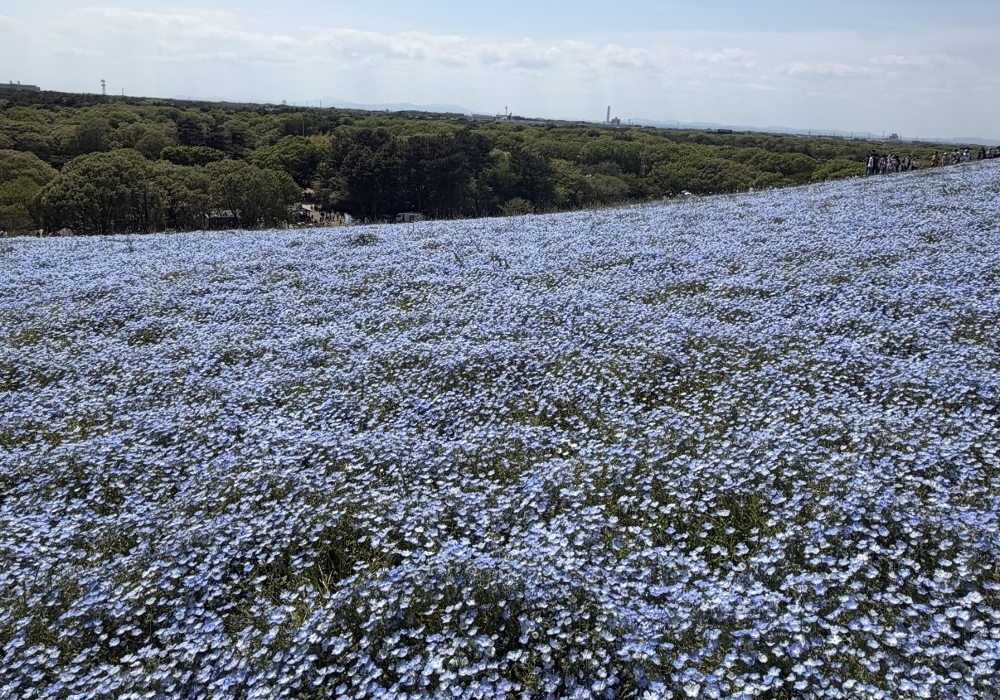

国営ひたち海浜公園のネモフィラ

国営ひたち海浜公園のネモフィラは、日本を代表する春の絶景として知られています。 園内の「みはらしの丘」では、例年4月中旬から5月上旬にかけて約530万本のネモフィラが 一面に咲き誇り、丘全体が青く染まる幻想的な景色を楽しむことができます。空や海とネモフィラの 青色がつながるような美しい風景は、多くの観光客や写真愛好家を魅了しています。 ネモフィラは北アメリカ原産の一年草で、小さく可憐な青い花が特徴です。 見頃の時期には、園内を散策しながら春の自然を満喫できるほか、季節限定のイベントやグルメも楽しめます。 美しい景色だけでなく、花を見ることで心が癒やされ、リラックスした気分になれることもネモフィラの 魅力の一つです。そのため、毎年国内外から多くの人が訪れ、春の風物詩として親しまれています。